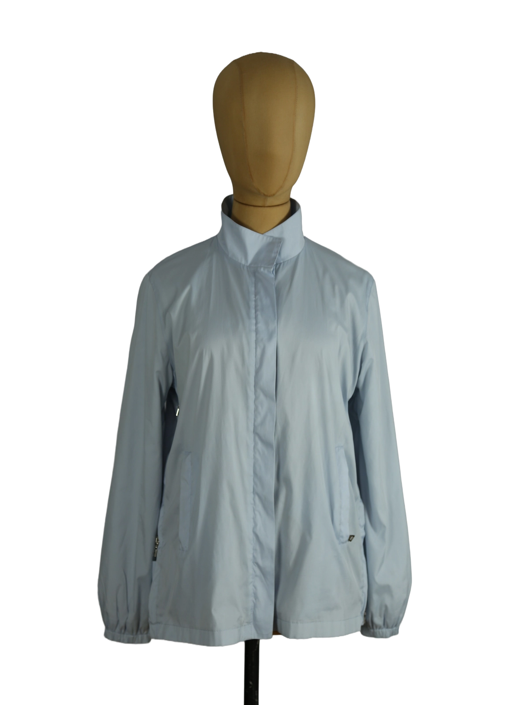

1 / 16Aus dem kuratierten Archiv von Disorder119. Eine minimalistische, technisch anmutende Jacke von Prada in einem ruhigen, hellen Blau. Der cleane Aufbau mit verdeckter Frontleiste und zusätzlichem Reißverschluss erzeugt eine klare, reduzierte Silhouette, während der leicht strukturierte Stoff eine subtile Spannung zwischen Funktion und Eleganz schafft. Der hohe Stehkragen betont die vertikale Linie und verleiht dem Stück eine fast uniforme Strenge. Elastische Abschlüsse an den Ärmeln sorgen für eine kontrollierte Form, während die seitlichen Taschen dezent integriert sind. Ein feines, typisches Prada-Detail zeigt sich am Ärmel in Form eines roten Akzents, der bewusst zurückhaltend gesetzt ist. Die Jacke wirkt leicht, präzise und vielseitig tragbar, sowohl als Übergangsstück als auch als funktionale Layering-Komponente. Details: Marke: Prada Farbe: Hellblau Größe: 48 Passform: Regulär Verschluss: Reißverschluss mit Knopfleiste Material: Technisches Mischgewebe Herstellungsland: Italien Fotografie & Passform: Das Kleidungsstück wurde auf unserer Standard-Schneiderpuppe fotografiert, die wir zur konsistenten Darstellung aller Kleidungsstücke verwenden. Maße der Schneiderpuppe: Brustumfang 89 cm Taillenumfang 66 cm Hüftumfang 89 cm Schulterbreite 38 cm Zustand: Guter Zustand mit sichtbarer Verfärbung am Kragen. Rechtliche Hinweise: Verkauf als gebrauchtes Kleidungsstück. Die Beschreibung erfolgt nach bestem Wissen und Gewissen. Farbnuancen und Oberflächenwirkungen können aufgrund von Lichtverhältnissen bei der Fotografie sowie unterschiedlicher Bildschirmdarstellungen leicht vom Original abweichen. Disorder119 steht für sorgfältig kuratierte Designerstücke mit Fokus auf Authentizität, Qualität und zeitlose Relevanz.
Shop-Kontakt noch nicht eingerichtet: WhatsApp-Nummer oder E-Mail-Adresse fehlen in SHOP_CONFIG (index.html).
Disorder119 · Kuratiertes Archiv für Designer-, Vintage- und Contemporary-Mode. Jedes Stück wird einzeln ausgewählt, fotografiert und beschrieben.